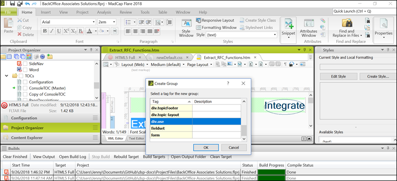

SST Page Description Guidelines
Application of Styles
When applying a style, it may be necessary to clear a style or remove attributes from a style so that text is formatted correctly. Clear the style by highlighting the text (click the style block in the XML Editor), and then on the Home tab, in the Font group, click the Unformat icon.
h1
All page description topics start with h1.
h2
If the topic has Horizontal and Vertical views, format the page name V in h2.
p
Use the (paragraph style) for text that is not in a table, is not bulleted, and is not a note. Use the paragraph style for bookmark links to the Vertical and Horizontal View pages.
div.use
Apply the div.use class to the, Use this page to section in each page description.
Select either the single line, or the line with the bullets if the page is used in multiple use cases. On the home tab, in the Paragraph group, click the Group icon and select div.use from the list.

Bullets
When describing a list of options, such as values in a list box, use bullets and bold the option name. Bold only the first word when the bulleted items are followed by an explanation.
For example:
Options are:
Numbered Steps
Numbered steps are used in the navigation section of PD topics. Begin the section with "To access this page" and add the steps from the use case to navigate to the page. Use the same numbered list formatting as in a Use Case.
Tables
The fielddescription.css table stylesheet is used for format tables. The left column is 200px and the right column is 550px. Refer to section Format Tables or more information.
Other notes about table standards are:
-
Use the p.TableColumn style for the first row and the left column in the table. Use p.TableText for other rows.
-
Use the p.TableNote style for adding notes to tables.
-
On the Home tab, in the Paragraph group, use the Bulleted List option to format all bullets.
-
In the Help topic, include the collapsible section headings from the SST's Vertical View in a merged cell in the FD table (do not make the headings collapsible in the Help topic). Format the heading using the p.TableColumn style and merge the cells.
See the Basic Data row below for an example.

See the Basic Data row below for an example.
Character Styles
Italics
Use italics for:
- Page names (e.g., the Targets page)
- Vertical View
- Horizontal View
- Navigation pane
- The title of a manual (e.g., Syniti Solutions installation and Upgrade Manual)
Bold
Use bold for:
- The word NOTE.
- The name of an option in a bulleted list. Refer to Bullets for more information.
- UI elements included in an imperative sentence
References to Use Cases
Every page descriptions topic must reference a use case and provide a link to it.
In rare cases where no use case is needed, include information about how a page is used. For example, the Process Area Launch page in Map does not require a use case. It contains the text: Use this page to access the pages as described below.
NOTE: When adding a use case, add a link to that new use case from the page description topic.
Page Description topics
- Each component has a page descriptions topic accessible in the Content Explorer (PageDesc/<componentname> Page Descriptions) that serves as a TOC for all the component's pages.
- The component page description topic display below the Setup and Configuration section in the right side TOC
- The topics are named [Component Name] Page Descriptions.
- The topics contains an alphabetized hyperinked list of all pages in the component
Page Descriptions Topics with One View Structure
If a page does not have a Vertical View, organize the page descriptions topic in this order:
- Name of page (h1)
- References to use cases that use the page. Use the standard text: "Use this page to" (apply div.use to this line and any bullets that follow it - see Application of Styles).
- Use case one (Bullet)
- Use case two (Bullet)
- Navigation to page using numbered steps. Use the standard text (To access this page. . . "(p)
- Table

Field Descriptions Topics with Horizontal and Vertical View Structure
If a page has a Horizontal and Vertical View, the topic contains the descriptions for both the Horizontal and Vertical views.
Present content in this order:
- Name of page H (h1)
- Page name V (p) (hyperlink to page name V bookmark)
- Use this page to (p) (apply div.use to this line and any bullets that follow it - see Application of Styles).
- Use case one (Bullet)
- Use case two (Bullet)
- Navigation to page using numbered steps Use the standard text (To access this page. . . "(p)
- Table
- Page Name V (h2) (bookmark linked to Page Name V at top of topic and to TOC page for Page Name V
- Page name H (p) (hyperlink to page name H bookmark)
- Use this page to (p) (apply div.use)
- Use case one (Bullet) Include only if VV is specifically used in use case.
- Use case two (Bullet) Include only if VV is specifically used in use case.
- Table
References to use cases for Vertical View
Include references to use cases that mention the Vertical View specifically. Do not duplicate the list of use cases from the Horizontal View (unless the same use cases use both views).
Field Descriptions with a Tabbed Vertical Layout
Some Vertical Views contain tabs to separate content. Use the following guidelines when formatting field descriptions for a tabbed vertical layout in Flare.
Include the field descriptions for all tabs in one topic under the Vertical View.
Present content in this format:
- Page Name V (All tabs) (h2)
- Page Name H (p) (link to top of page)
- This page contains the following tabs: (p) (apply div.use to this and following bullets)
- General tab (Bullet, include the word tab)
- Advanced tab (Bullet, include the word tab)
- General tab (h2)
- Use this tab to: (p) (div.use)
- Use case one (Bullet) Include only if the tab is specifically used in use case.
- Use case one (Bullet) Include only if the tab is specifically used in use case.
- Table
- Advanced tab(h2)
- Use this tab to: (p) (div.use)
- Use case one (Bullet) Include only if the tab is specifically used in use case.
- Use case one (Bullet) Include only if the tab is specifically used in use case.
- Table
The following image includes a tabbed vertical layout screen shot and an example of how to format the content:

References to use cases for Tabbed Layouts in Vertical View
Include references to use cases that mention the tab specifically. Do not duplicate the list of use cases from the Horizontal View (unless the same use cases use both views).
Tables
Include a two-column table for page descriptions
- Name the column headings: Field and Description.
- Apply the fielddescription.css table style to all tables.
- Do not include standard fields such as edit, status, and delete in page descriptions.
Refer to the section [Format Tables in Topics][BOADocProcess_UpdateOnlineHelp.html#formattables] for more information.
Page Descriptions Content
-
Verify the accuracy and completeness of field names in the product. When verifying names, review the labels on the fields. The field name must match the label name exactly, including capitalization and spacing.
-
Alert Development if any spelling errors and inconsistencies are found.
-
Ideally, a field that appears on multiple pages in the product has the same basic description on each page. If possible, reuse the description of a field.
-
The description of a field never contains numbered steps.
-
When possible, include where (include the page name if on a page other than the current page) and when (during which task) the data in a field is entered for display fields.
NOTE: For example: On the Integrate > template page: Template name field - Displays the unique name of the template entered when the template was added.
-
Descriptions explain each field in Display mode, not when a user adds or edits information. Include information specific to adding and editing in the use case, not in the page description. If information essential to adding and editing must be included, clarify it with When adding or When editing. . .
-
Begin the description of a button or icon that opens a page with Click to open the X page to add, edit and delete
-
Begin the description of a text box with Displays. . .
-
Begin a description of a check box with the words If checked, . .and describe the setting. Follow by a sentence that begins If unchecked, . .if this functionality merits clarification.
-
In most cases, it is unnecessary to include that a field is required because required fields are indicated in the user interface. Include a note in the description if a special circumstance requires that a field be completed.
-
When describing a list box, include the source of the values, if applicable.
-
When describing a list box or check box on the HV, confirm that selections from those elements do not affect the fields that display on the VV. Those fields must also be documented.
-
Every field on a page must have a description, even if the field is not used in the product for the current release. There are two reasons why a field/page is not used:
- It is no longer used in the product but has not yet been hidden from the UI. In this case, use the standard This field/page is not used.
- It is under development, and the feature will be used in an upcoming release. In this case, use This field/page is not currently used, but will be activated in a future release.
Guidelines for Improving Page Descriptions
-
Describe where data in a field comes from and why/how it is used
-
Indicate if the field is not used or deprecated
-
Whenever possible, add links to use cases in descriptions to provide more information on how and when fields are used.
-
Whenever a page is mentioned, hyperlink the page name to the corresponding page description topic.
-
Review the use case describing the page. Content from the use case can be used to clarify the descriptions of the field (and vice versa).
-
The descriptions of the same field in Horizontal and Vertical View have the same descriptions (except in rare cases).
-
Avoid providing a field description that repeats the field name and nothing else. For example, include more information in a description of the Target field then Displays the name of the target. For example, you can write for Name (as in the Target;s Name)
| NAME | Displays the Target name, which is the table name with tt appended to the front.|
Field Types Guidelines and Examples
|
List box: Value stored in database and cannot be updated by the user.
|
Admin > Data Sources > DATA SOURCE TYPE
|
Include a list of each delivered option, and description of when/why/how to use each option if relevant.
|
|
|
|
Any check box that is named “DSP Supplied†ALWAYS USE THE SNIPPET HERE FOR THIS CHECK BOX. It is available as a snippet in Flare.
|
|
|
If checked, this content is installed with the platform and cannot be edited. If unchecked, the content was added by a user or process. NOTE: This is a display-only check box. It cannot be updated.
|
|
|
List box: Value created in SQL server as a view/rule/report etc.
|
Transform > Targets > Reports > TARGET REPORT
|
State that the options are a result of views/stored procedures/etc added in SQL
|
|
Target source reports are managed in SQL.
|
|
Combo box
|
Console > Process Areas > PROCESS AREA ID
|
Include a link to the use case that describes adding the object displayed in the combo box.
|
|
Select an option in the PROCESS AREA ID combo box, or click the + sign to add an option. Refer to Add a Process Area for more information.
|
|
Icon that performs an action when clicked (executes a process, generates a report etc.)
|
Transform > Targets > Process
|
Describe scenarios that cause the icon to be disabled if any. State the action performed and/or why it is performed.
|
|
Click the Process icon to process the report in the background. NOTE: This icon is dimmed if the report’s status is Inactive.
|
|
Icon that opens a page when clicked
|
Collect > Tables > Indices
|
Describe scenarios that cause the icon to be disabled, if any. Describe the purpose of the count shown on the icon. State the page name that opens and what can be done on the page.
|
|
Click to open the Table (Indices) page to register indices to table. The count on the icon is the total number of indices registered to the selected table.
|
|
Check box that can be selected.
|
Console > Advanced Configuration > Parameters > Map > Objects Required
|
Explain what effect checked /unchecked has, including the name of the page affected.
|
|
If checked, the Objects icon displays on the Process Area Launch page in Map and a user can perform Object Design. The Object Design phase is not required. (Object Design is used when the target system is SAP only.) If unchecked, the Objects icon does not display on the Process Area Launch page in Map. This setting is checked or unchecked for the entire site, and cannot be set for a specific data migration project. It is checked by default.
|
|
Text field with user entered text (such as Comment fields)
|
Console > Waves > Process Areas > Objects > Vertical View > Comment
|
Make it clear that information in this field is entered by a user.
|
This field contains user-entered text for documentation purposes and is not validated.
|
Displays user-entered comments about the target that were entered on the Object: Target page’s Vertical View in the Comment field. This field stores free-form text and is not validated.
|
|
Display only field: Field cannot be edited on the page
|
Common > Analyze > DATA SOURCE ID
|
Include whether this data is stored in the database and can’t be updated OR include page this data is entered on. Use “This field is populated by the system†to describe fields of this type. If applicable, add the condition under which the field is populated. Example from the field descriptions for the AutoGen BODS Requests page for the field REQUEST CREATE DATE: †Displays the date the AutoGen request was created. This field is populated by the system when an AutoGen request is created and indicates that the request package is ready to be automatically or manually.
|
These values are stored in the database and cannot be updated through the UI.
|
Displays unique ID for the data source being analyzed. Data Sources are registered in the platform in Admin > Data Sources.
|
|
Text field that must be updated at client site
|
Console > Advanced Configuration > Parameters > General tab > Email From field
|
Include how/why the field is used and that it must be updated.
|
This field must be updated at the client’s site.
|
Displays the email address that sends workflow emails from dspMigrate™. This field must be updated at the client’s site.
|
|
Field with text that displays as a link
|
Integrate > Categories > Processes > Templates > Template ID
|
Page that opens when a user clicks the link. What action can be performed on that page when it is accessed that way.
|
|
Click the template name to open the Template page to view or edit information about the selected template.
|